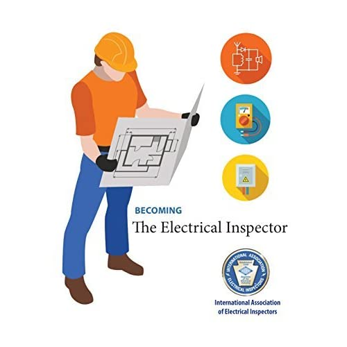
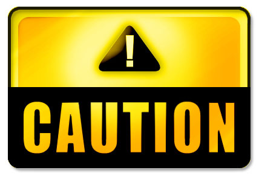
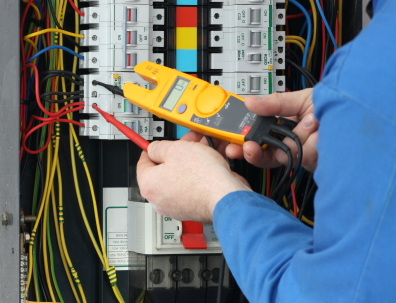

ABOUTS US
We M/s. Electrical Inspector Pakistan (Pvt) Ltd is a Nation wide Leading TPI company registered (No. 0073632/5785 Dated 10-12-2010) with Goverment of Pakistan SECP (Security Exchange Commission of Pakistan), we are Third Party Inspector & Auditing Firm and in Pursuance of aims under Article-II & III of Memorandum of the firm registered under Companies Ordinance-1984doing Inspection, Testing, Assessment, Arbition for the electrical safety and energy saving. We perform and confirm the facility underwent throught comprehensiveelectrical safety audit to assess its vulnerability in terms of system gaps in the electrical network and the implemented electrical protection sysyem. Our Team of experts comprises as follow alongwith necessary tools meters.
Seafty Measures
Team of safety experts from Electrical Inspector Pakistan visits organizations and prepare reports in details the observation and the findings along with insight view of gaps. Our report presents opportunity to the Auditee/organization to fill up the gaps and minimize the severity of risks as depicted in this report.
DISCRIPTION OF PROJECTS COMPLETED BY OUR COMPANY
| S. | Description |
|---|---|
| 1 | M/s K-Electric Karachi, 560 MW, 220-MW, 96-MW Site, 96-MW KIA. |
| 2 | M/s Engro Chemical & Polymer, Karachi. |
| 3 | M/s AL Karam Textile (Pvt) Ltd Karachi. |
| 4 | M/s Akhtar Textile (Pvt) Ltd Karachi |
| 5 | M/s Morgan Kirloskar Pvt Ltd, Karachi. |
| 6 | M/s NBP National Bank of Pakistan, Khi. Lhr, Isl |
| 7 | M/s PTCL Pakistan Telecommunication Company Ltd, Khi, Lhr, Isl |
| 8 | M/s Eastern Garments, (Pvt) Ltd. Karachi. |
| 9 | M/s Shapes Health Studio (Pvt) Ltd. Karachi. |
| 10 | M/s SINOHYDRO Chinese,1320-MW at Port Qasim Karachi. |
| 11 | M/s TUV-Austria (Pvt) Ltd. Karachi. |
| 12 | URS-Inspections (Pvt) Ltd. Karachi. |
| 13 | Cineplex (Pvt) Ltd, Karachi. |
| 14 | Evershine Constructors Via EA Consulting (Pvt) Ltd |
Criteria of Inspection Testing with Applicable Law & Standards
The following regulations have been used as reference for this audit.
| S. | Description |
|---|---|
| 1 | Local Electricity Act-1910 |
| 2 | Local Electricity Rules-1937 |
| 3 | Local Electricity Duty Rules-1964 |
| 4 | Local Standard PS-3632 PSQCA Act-1996 |
| 5 | British Standards BS-7671:2008 |
| 6 | NFPA National Fire Protection Association (USA). |
| 7 | IEC International Electro technical Commission (USA) |
| 8 | ASTM American Society Testing Material (USA) |
| 9 | ANSI American National Standard Institute (USA) |
Inspection, Testing and Audit Plan and Audit Activities
For Complete Inspection testing and audit report click the button to download.......!
BLOG
ARTICLES
 Electrical hazards consistently make OSHA’s annual list of most frequently cited standards. Electrical equipment, wiring methods, and other electrical components can pose serious threats to workers if they’re damaged or improperly installed. Employers need to know how to identify electrical safety risks and how to control employee exposure. The facility will need to have an electrical safety program, providing the right personal protective equipment (PPE) and electrical safety training for employees. All electrical hazards should also be marked with the appropriate signs or labels. The articles below cover many aspects of electrical safety including PPE, labeling, and regulations. Businesses should also know about arc flash, a serious electrical safety hazard that could result in serious injury or even death. Explore our 10 recommendations for electrical safety in the workplace or learn how to create an electrical safety program. Find the information you need to stay compliant with OSHA regulations and the National Fire Protection Association’s standards, and to keep everyone in your facility out of harm’s way.
 In an ideal world, every time you go to flip a light switch or plug in an electronic device, you are going to get a steady, safe stream of power, but sadly, that isn't always the case. Your electrical system is a massively complex organism, and from time to time, it develops little hiccups that can inhibit it from performing like it should. When it comes to keeping your home or business's electrical system functioning like it should, one of the best things you can do is call in a professional electrician and have them perform a thorough electrical safety inspection on your system. There are a number of different reasons that come together to make getting an electrical safety inspection a wise investment for your home or business, and to highlight exactly what a few of those are, our team of professional electricians have taken the time to put together this short list identifying exactly what a few of those are.